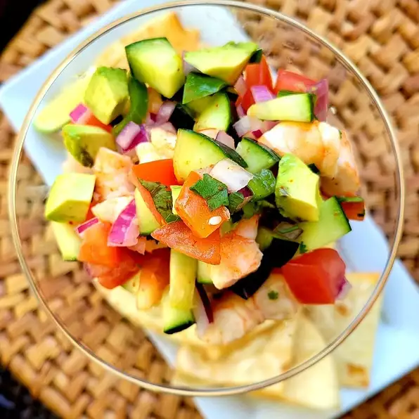

Ceviche

Description
Super light and refreshing. I use the recipe without the fish (reduce the lime juice) as a topper for grilled tuna. Serves 4 as a lunch, 8 as an appetizer.
Ingredients
- 1 pound halibut, cut into bite-size pieces
- ½ cup lime juice
- 1 large tomato, seeded and diced
- 1 bunch fresh cilantro, chopped
- ⅓ cup diced green bell pepper (Optional)
- ⅓ cup chopped green onion
- 1 jalapeno pepper, chopped, or to taste
- 4 cloves garlic, minced
- salt and ground black pepper to taste
Steps
-
Place fish into a flat dish; cover with lime juice.
Chill fish in refrigerator until tender and opaque,
at least 3 hours. Drain lime juice.
-
Mix tomato, cilantro, green bell pepper, green onion,
jalapeno pepper, garlic, salt, and pepper in a bowl;
add fish and stir. Chill in refrigerator until flavors blend, about 1 hour.